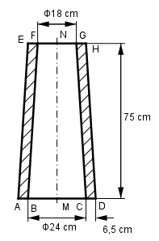

Aufgabe 268 Wie viel wiegt der Schornstein, wenn seine Dichte 1,8 kg/dm3 beträgt?

Äußeres Kegelstumpfvolumen: r1 = BC/2 + 6,5 cm = = 24 cm/2 + 6,5 cm = 18,5 cm r2 = FG/2 + 6,5 cm = = 18 cm/2 + 6,5 cm = 15,5 cm MN Vaußen = ----- * (r12 + r1 * r2 + r22) m3 3 75 Vaußen = ----- * (18,52 + 18,5*15,5 + 15,52) cm3 3 Vaußen = 21 731 cm3 = 21,73 dm3 Inneres Kegelstumpfvolumen: r1 = BC/2 = 24 cm/2 = 12 cm r2 = FG/2 = 18 cm/2 = 9 cm MN Vinnen = ----- * (r12 + r1 * r2 + r22) m3 3 75 Vinnen = ----- * (122 + 12 * 9 + 92) cm3 3 Vinnen = 8 325 cm3 = 8,325 dm3 m = (Vaußen - Vinnen) * р m = (21,73 dm3 - 8,325 dm3) * 1,8 kg/dm3 = 24,1 kg